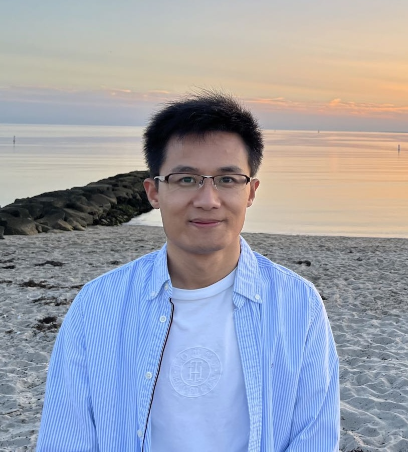

Research Associate | Woods Hole Oceanographic Institution
Yanchen Sun, Ph.D.
I integrate environmental chemistry, microbiology, and engineering to understand pollutant transformation and design practical solutions for more sustainable natural and engineered systems.
Current research includes plastic degradation, emerging contaminants, environmental instrumentation, waste-to-resource technologies, and microbially mediated greenhouse gas processes.
About

Dr. Yanchen Sun is a Research Associate in the Department of Marine Chemistry and Geochemistry at Woods Hole Oceanographic Institution. He is an interdisciplinary environmental scientist working at the interface of environmental chemistry and microbiology to advance practical, sustainable responses to pollution across natural and engineered systems.
Research Overview
Dr. Sun develops mechanistic and quantitative approaches to understand how pollutants and greenhouse gases transform, persist, and affect aquatic, soil, and engineered systems. His work connects fundamental environmental science with pollution control, monitoring, and sustainable materials design.
Plastic Degradation and Lifetime Prediction
Mechanisms and environmental controls on plastic transformation in aquatic systems.
Research ThemeEmerging Contaminant Fate
Transport, transformation, and persistence across natural and engineered systems.
Research ThemeWaste-to-Resource Technologies
Circular approaches that connect waste conversion with sustainable materials design.
Research ThemeInstrumentation and Methodology
Environmental measurements for degradation, respiration, and contaminant transformation.
Research ThemeMicrobially Mediated Processes
Microbial controls on biogeochemical cycling and greenhouse gas emissions.
Recent News
Recent publications and presentations from Dr. Sun's research program.
Gordon Research Conference on Environmental Sciences: Water
Poster presentation on plastic degradation in coastal environments.
2026 MarFEMS Microbiology Ecology publication
Published research on incomplete denitrifying bacteria and N2O fluxes in permafrost microcosms.
2025 SepEnvironmental Science & Technology publication
Published work on temperature controls on cellulose diacetate lifetime in the coastal ocean.